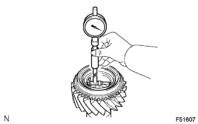
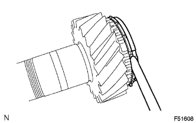
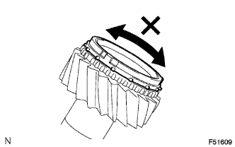

ВЫХОДНОЙ ВАЛ > ПРОВЕРКА |
| 1. INSPECT OUTPUT SHAFT |
|  |
Using a cylinder gauge, measure the inside diameter of the output shaft.
| 2. INSPECT NO. 3 SYNCHRONIZER RING |
|  |
Using a feeler gauge, measure the clearance between the synchronizer ring and gear spline.
Coat the output shaft cone with gear oil.
|  |
Check the braking effect of the synchronizer ring.
Turn the synchronizer ring in both directions while pushing it against the output shaft cone. Check that the ring locks in both directions.